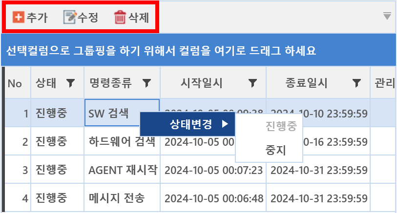

3-1-1-2. 반복명령
3-1-1-2. 반복명령
Source: https://www.sweeper.or.kr/etc/manual/3112.html
3-1-1-2. 반복명령
3. 공통 ›› 3-1. 도구 ›› 3-1-1. 명령센터 ››


특정 명령을 지정된 시간에 반복적으로 전송할 때, 사용하기 위한 기능입니다. 예를 들어 중요한 메시지를 특정기간에 반복적으로 보내야 하거나, 매일 특정시간에 PC 전원을 꺼야할 때 해당명령을 사용할 수 있습니다.
반복명령
- 반복명령이란 특정 명령을 예약 시간에 맞춰 반복적으로 전송될 수 있도록 하는 기능입니다.
- 예를 들어 특정 시간에 메시지 전송이 설정된 기간동안 지속적으로 팝업되도록 명령이 반복적으로 전송됩니다.

명령 기능

- 추가 : 새로운 반복명령을 신규로 생성하는 기능입니다.
- 수정 : 등록된 반복명령을 수정할 수 있습니다.
- 삭제 : 등록된 반복명령을 삭제할 수 있습니다.
- 상태변경 : 진행 중인 반복명령을 중지 시킬 수 있습니다.
참고사항
-
반복명령은 30분 기다리면 예약명령이 생성되고 수행됩니다.
-
반복명령을 쿼리그룹이나 부서에 내리는 경우. 장비 추가/삭제되면 명령 대상 업데이트는 자정 12시에 반영됩니다.
© Copyright SWeeper Inc.. All Rights Reserved